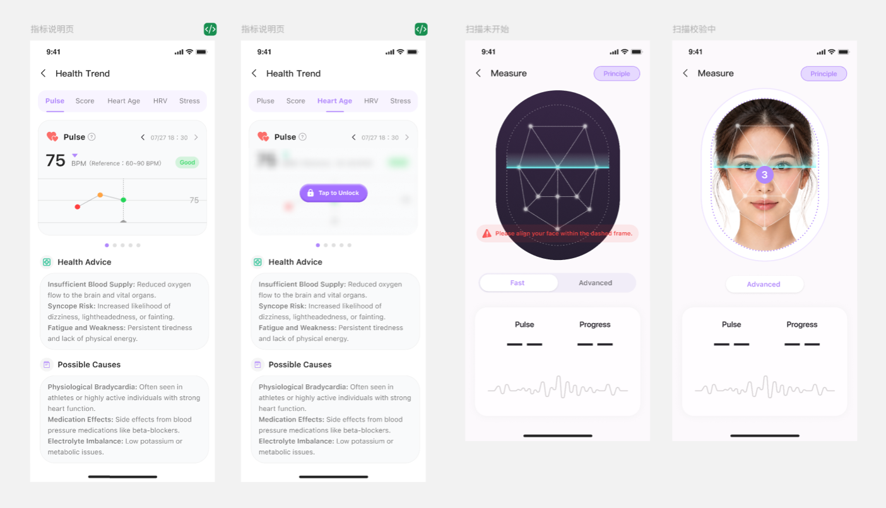

01
THE SCIENCE OF A SCAN
Read subtle changes
in your face.
During a guided scan, the camera observes tiny variations in reflected light caused by blood flow beneath the skin. This non-contact approach is commonly known as remote photoplethysmography (rPPG).
Explore the research ↗